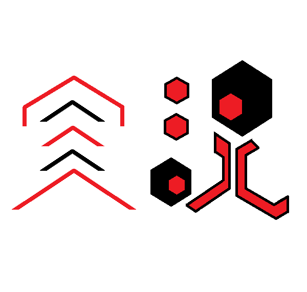
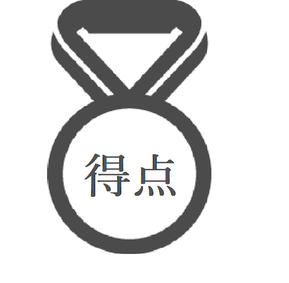
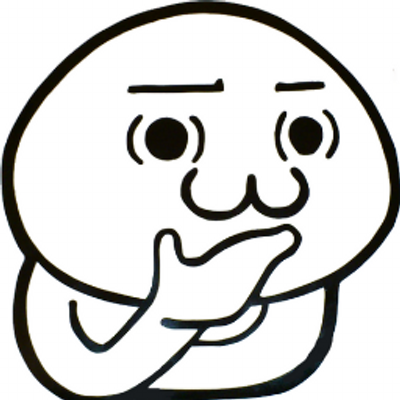

<ons-page>
    <ons-toolbar>
      <div class="left">
        <ons-toolbar-button onclick="fn.open()">
          <ons-icon icon="ion-navicon, material:md-menu"></ons-icon>
        </ons-toolbar-button>
      </div>
      <div class="center">
        当日
      </div>
    </ons-toolbar>
    
    <!-- 実況の画像とテキスト -->
    <div style="position: absolute; top: 10px; left:20px;">
        
    </div>
    <div style="position: absolute; top: 140px; left:27px;">
        <p><font size="+1">実況</font></p>
    </div>
    <div style="position: absolute; top: 170px; left:27px;">
        <p><font size="-1"><span style="opacity: 0.6;">競技の実況、進行状況</font></span></p>
    </div>
    
    <!-- 得点の画像とテキスト -->
    <div style="position: absolute; top: 10px; right:20px;">
        
    </div>
    <div style="position: absolute; top: 140px; right:140px;">
        <p><font size="+1">得点</font></p>
    </div>
    <div style="position: absolute; top: 170px; right:60px;">
        <p><font size="-1"><span style="opacity: 0.6;">現在の組ごとの得点</font></span></p>
    </div>
    
    <!-- 予想の画像とテキスト -->
    <div style="position: absolute; top: 230px; left:20px;">
        
    </div>
    <div style="position: absolute; top: 360px; left:27px;">
        <p><font size="+1">予想</font></p>
    </div>
    <div style="position: absolute; top: 390px; left:27px;">
        <p><font size="-1"><span style="opacity: 0.6;">試合勝敗の予想(工事中)</font></span></p>
    </div>
 </ons-page>